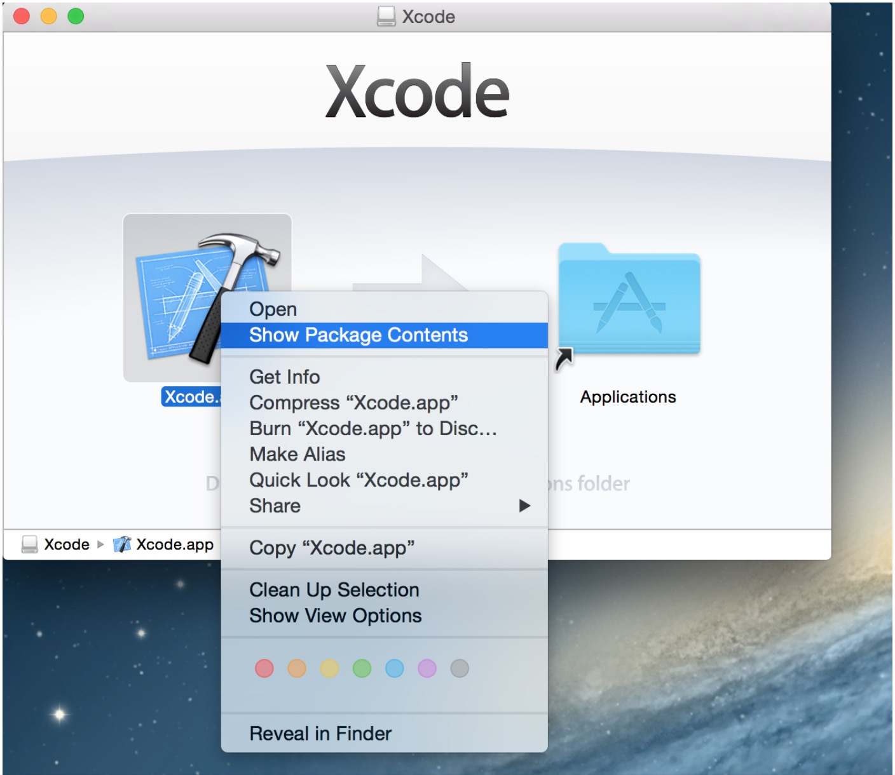
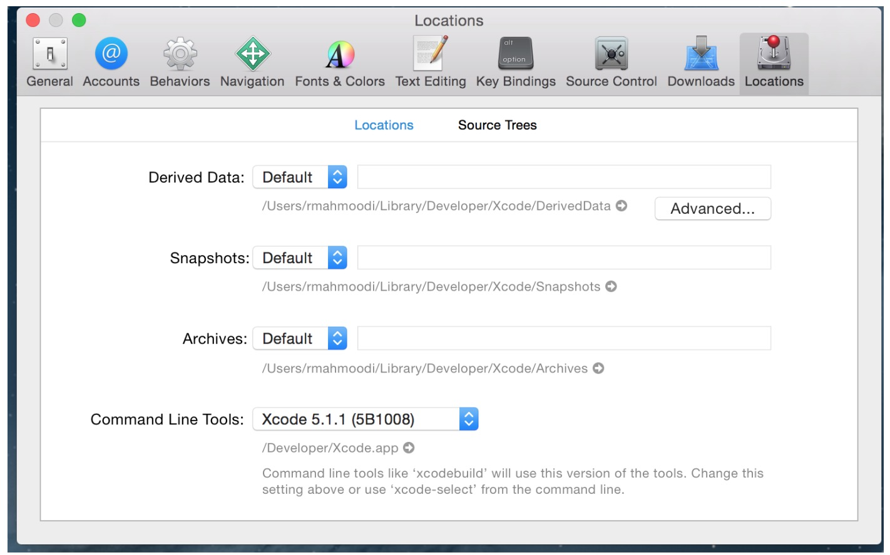
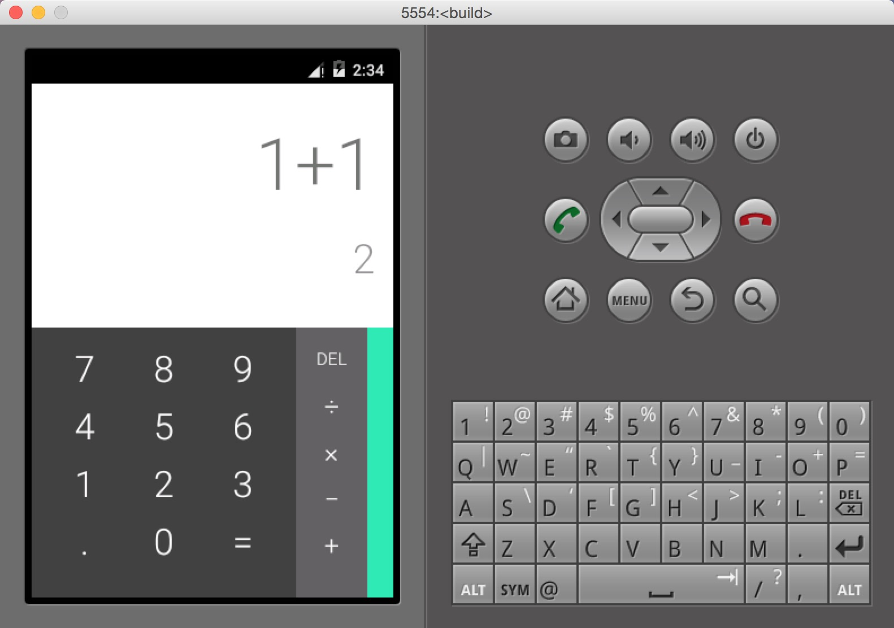
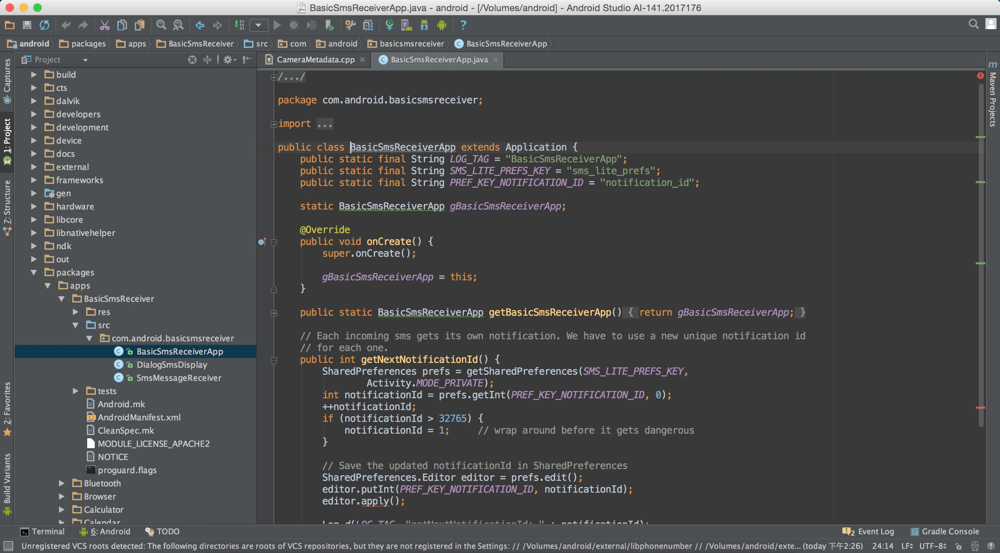

突然觉的学习 Android 应该去了解下它的源码，虽然内容量很大很大，但是慢慢的去看一下想了解的模块，还是可以的。这将会是一个漫长的过程。
环境
- OS X Yosemite
- Xcode 6.3.2
- Android 5.0.1
按照官网的 Initializing a Build Environment 来配置环境，这里应该是没有什么问题的。很无奈的是下载源码挂 VPN 断断续续的竟然下了近一周！这时间真是太长了。
问题
repo: command not found
这个问题出现在你执行 repo sync 的时候。解决方法是在执行之前输入：
1 | $ PATH=~/bin:$PATH |
再执行 repo sync 就可以继续下载了。
Unable to find any JVMs matching version “1.7”.
这个问题是出现在 lunch 的时候。错误告诉你没有 1.7 的 jvm。其实我这里已经有个 8 的 jdk，所以配置环境的时候直接是跳过了配置 Java 这一步。
再回去看发现 5.0 以上的是要求使用 Java 7 的。Mac 的话使用 jdk-7u71-macosx-x64.dmg。下载一个 JDK 7 就可以了。
case-sensitive filesystem
在 lunch 的时候还出现了这个错误：
1 | You are building on a case-insensitive filesystem. |
在 Mac 的话，需要创建一个大小写敏感的分区，操作相当于 U 盘。这个之前我已经创建了，出现这个错误是因为运行的位置不对。应该把下载的源码放到这个分区里面运行才是对的。
1 | # hdiutil create -type SPARSE -fs 'Case-sensitive Journaled HFS+' -size 40g ~/android.dmg |
官网提供创建的分区大小是 40g，到后面发现在 make 生成 system.img 的时候大小是不够的。我设置成了 100g。
官网配置 function mountAndroid 这个是方便启动这个分区。配置完之后直接在终端输入 mountAndroid 就可以将这个分区启动。
之后才发现下载源码的时候直接下载在这个分区就行了。
fatal error: ‘string’ file not found
开始使用的时候，使用的 Xcode 6.1.1，报的错是：
1 | fatal error: 'cstring' file not found |
然后新装了 6.3.2 就报了错如标题，应该是差不多的问题。
解决方法：
下载 XCode5.1.1（apple 官网）
创建 /Developer/SDK 目录
1
sudo mkdir -p /Developer/SDK
复制 MacOSX10.8.sdk 到 /Developer/SDK

路径 Contents/Developer/Platforms/MacOSX.platform/Developer/SDKs/。
复制 Xcode.app 到 /Developer
在打开的 Xcode5.1.1.dmg 分区搜索，复制完之后这个 5.1.1 的就可以不要了。
打开 Xcode 6，Preferences 中修改 Command Line Tools

这个解决方案出自这里 Build Android 5.0 Lollipop on OSX 10.10 Yosemite 。
linux/netfilter/xt_DSCP.h: No such file or directory
1 | cd external/iptables/extensions/../include/linux/netfilter |
这样运行之后就可以解决。
大概就出现这几个错误，make -j4 这个命令之后经历了一个多小时的编译终于完成。

Android Studio 查看源码
产生 ide 的环境，进入根目录执行：
1
mmm development/tools/idegen/
成功之后执行：
1
sh ./development/tools/idegen/idegen.sh
- 最后用 Android studio 打开根目录（选择现有的项目）
